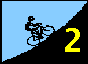
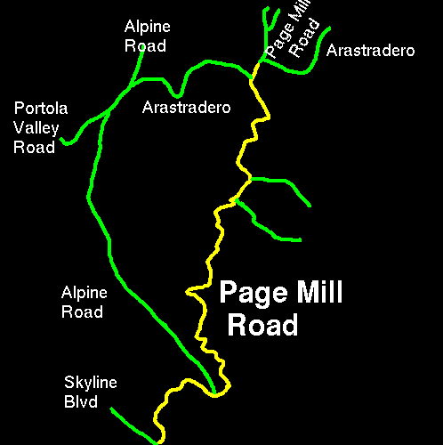

Week 2 results are in!!!
Click here to check 'em out.This is another repeat climb from the the 1995 series. Last year, Alto Velo's Tim Kurreck dominated the rest of the field to conclusively post the day's best time, beating the hapless second place rider by over a minute with a time of 36 minutes, 15 seconds. Whether you're trying to top Tim's result, post a benchmark time for yourself, or just enjoy the scenic Silicon Valley view (sic), you are encouraged to come out for the day's event.
You'll want to make sure your shifters are working for this one. From the start at the Park and Ride at Arastradero Road are 1.2 miles of mostly flat roads. Go out too hard, and you'll blow reserves needed for the slopes to follow. Go to easy, though, and the time lost cannot be made up, so don't plan on using this as your warm-up.
From here, the road suddenly and rudely tilts skyward. Still, the slope is variable, with grades near 15% over short sections, while much of the climb is shallower with a few intermediate descents thrown in as well. Again, staying in a the appropriate gear, and knowing how hard to push the pace is key to minimizing your time.
The run to the finish is rolling, with short, twisting climbs and descents. Don't let up here -- it's too close to the end to make up time lost to lapsed concentration.
After the finish, watch as later riders reach the top, and enjoy the company of those who arrived earlier. To return to the start area, either descend Page Mill Road, learning why it is so highly regarded by skilled descenders, or ride Skyline Boulevard north to Highway 84 for a high-speed descent into Woodside. A trip around "the Portola Valley Loop" will bring you back to Arastradero Road.
| Distance: | 8.7 miles |
| Climbing: | 2130 feet |
| Format: | Individual Start (30 second intervals) |
| Start: | Park and Ride near intersection of Page Mill Road and Arastradero Road (southern portion). This is right near intersection of Page Mill Road and Highway 280. |
| Finish: | Page Mill Road approx 50 meters before intersection with Skyline Blvd. |
| Reg Time: | 10:00 am to 10:20 am |
| Start Time: | 10:30 am |
| Fee: | 3 bucks |
| Weather: | approx 70F with a light breeze and clear skies -- perfect. |
| Map: |  |
djconnel@flash.net
{kind=link}